DSAN 6600: Multimodal Deep Learning and Graph Neural Networks
2026-11-19
Today
Multimodal : what CLIP is for, and the three ways to combine two kinds of inputDocument AI , the multimodal job you are most likely to be handedGraph neural networks , the short version
Last content meeting. Two weeks from today is presentations. The multimodal half is the practical one. The graph half is here so that when you meet relational data you recognize it, not so you can implement a GNN from memory.
What multimodal means
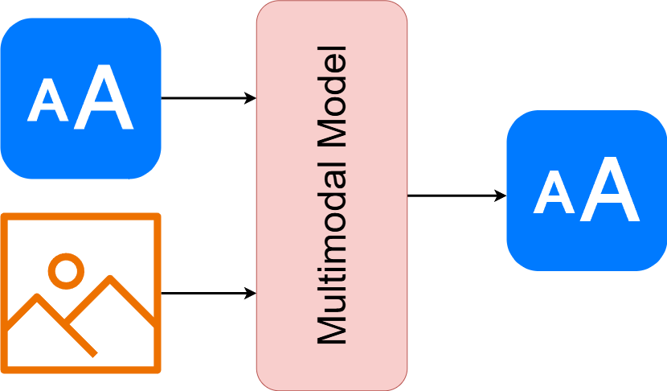
More than one kind of input, handled by one model.
The hard part is never the second encoder. It is getting two different kinds of representation into a form where they can be compared or combined, and that decision is what the first half of today is about.
CLIP, measured
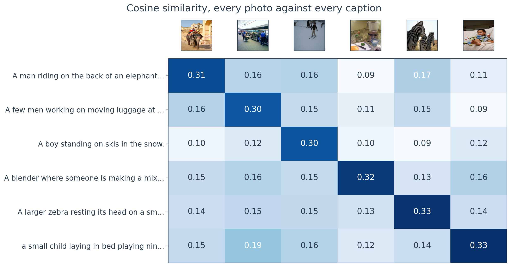
Six COCO photographs against their own human captions. The diagonal wins 6 out of 6 , and CLIP was never trained on COCO.
The numbers are cosine similarities between the image vector and the caption vector. The correct pairing is brightest in every row. Over 200 images in pools of 50, the right caption is top-1 92% of the time. Nothing was fine-tuned, and nothing about COCO was in the training objective.
Three jobs for one embedding
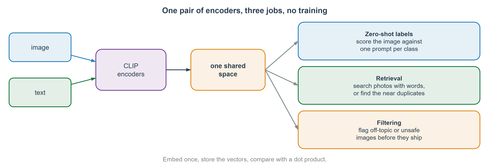
This is the Week 10 retrieval story again with pictures added. Embed the catalogue once, store the vectors, and every later question is a dot product. Zero-shot classification is the demo everyone shows, but search and deduplication are what people actually deploy.
Zero-shot, in detail
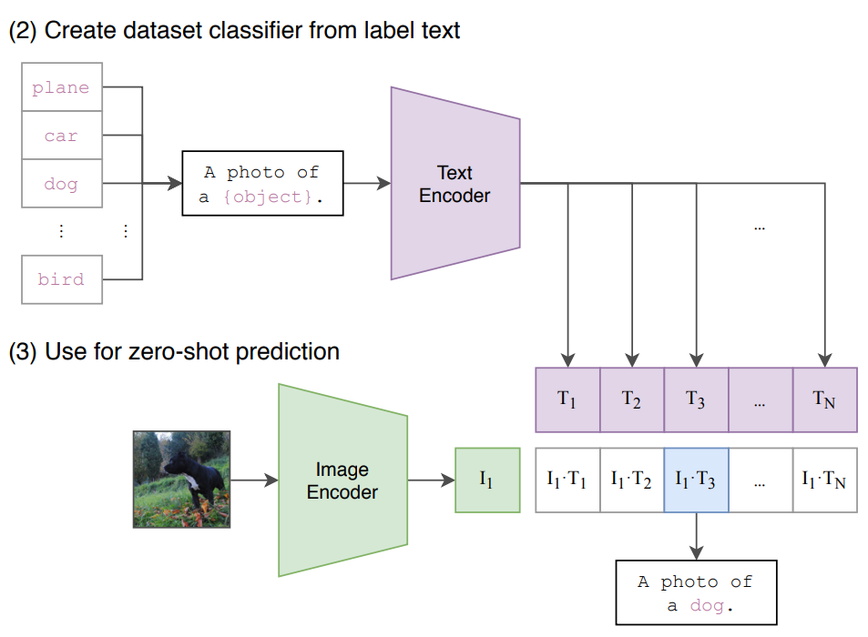
Write one sentence per class, embed those sentences once, then compare an image against all of them. The classifier is the list of prompts, so changing the label set costs nothing and needs no retraining. The wording matters more than people expect: “a photo of a dog” usually beats “dog”.
Three ways to combine two modalities
Early : embed both, concatenate, one transformer reads the mixtureLate : encode each separately, compare the two vectors at the endCross-attention : let one modality attend to the other, in the middle
This is the part to retain from today. Every multimodal model you meet is one of these three, and knowing which one tells you what it can and cannot do. Late fusion cannot reason about a specific region of the image, because by the time the two sides meet, the image is one vector. CLIP is late fusion.
Early fusion
Both modalities become tokens in one sequence, and a single transformer reads them together.
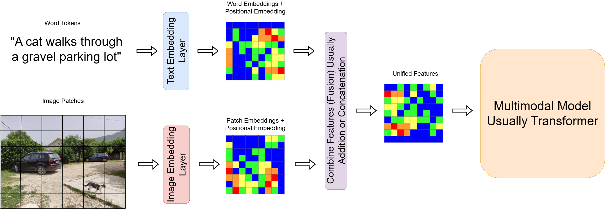
The model can relate a word to a specific patch from the first layer onward, which is what you need when the position of the text on the page is part of the meaning. The cost is that you have to train the whole thing jointly, and both modalities must be present at inference.
Document AI
LayoutLMv3 reads the words, where they sit on the page, and the pixels, all at once.
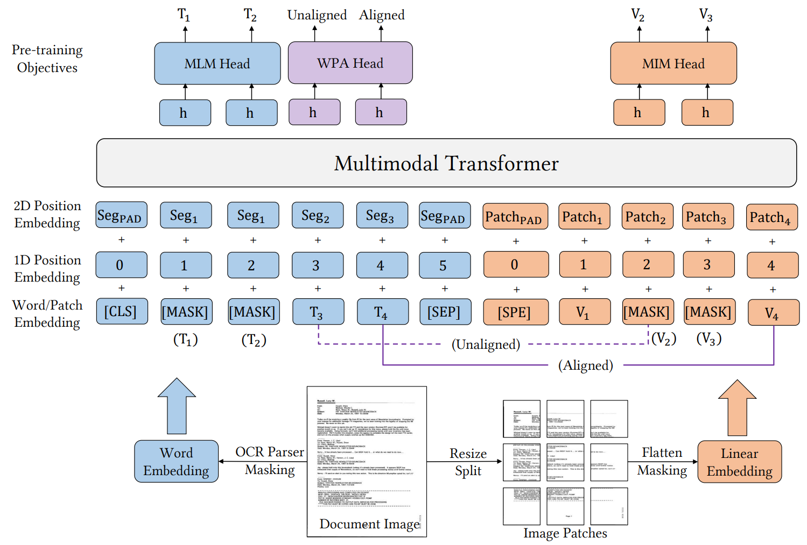
Every business has decades of invoices, forms, and scanned contracts, and someone is paying a vendor per page to pull fields out of them. This is the clearest example of early fusion earning its keep: on a form, the fact that a number sits in the box labeled “Total” is the entire signal, and a model that flattens the page to text loses it. Specialists like this still beat general vision-language models on tables and structured layouts.
Cross-attention
Keep the two encoders separate, and let one read the other in the middle.
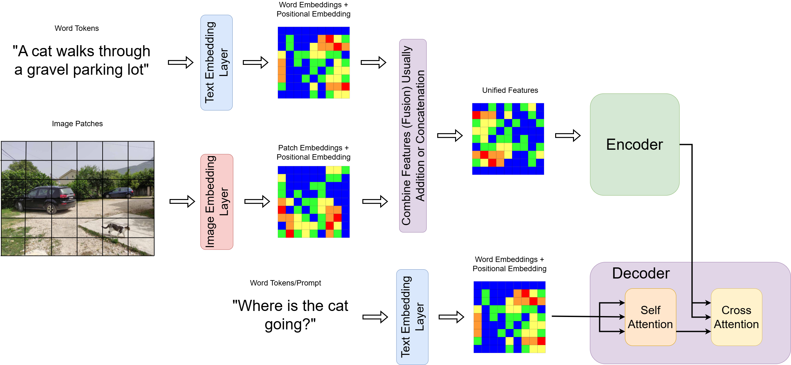
Same mechanism as the prompt entering the denoiser last week, and the same as the decoder reading the encoder in Week 9. It keeps showing up because it is the general answer to “let this sequence consult that one”.
Flamingo: freeze the language model
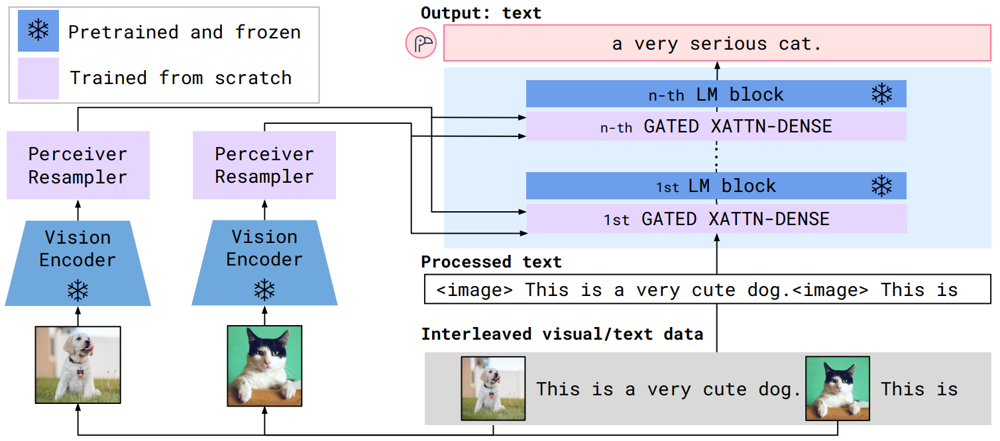
The snowflakes are frozen. Only the cross-attention layers train.
You already have a good language model and you do not want to damage it or pay to retrain it. So freeze it, and insert small gated cross-attention layers between its blocks that let it look at images. That is the same instinct as LoRA.
The gate
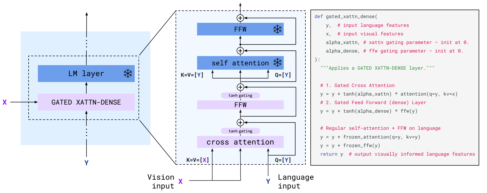
The tanh gates start at zero, so the model begins as exactly the original language model.
This is the detail worth knowing, because the trick generalizes. If you insert a new layer into a trained network you will damage it, unless the new layer starts as a no-op and learns to open. LoRA does the same thing by initializing one of its two matrices to zero. ControlNet does it with zero convolutions.
PaLI: write every task as text
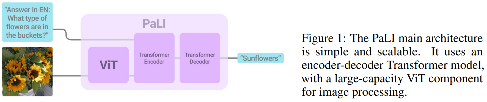
A ViT and one encoder-decoder, and the task is specified in the prompt rather than by the architecture. Captioning, visual question answering, and classification all become “read this image and this instruction, write the answer”. This is where the field went, and it is why the modern recipe is a vision encoder bolted onto a language model.
Picking one
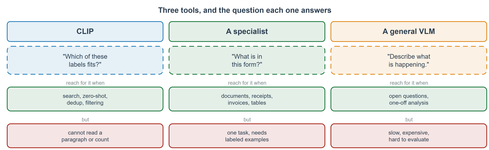
The common mistake in 2026 is reaching for a general vision-language model because it is easy to call, when the task is narrow and repeated. If you are processing the same form a million times, a specialist is cheaper, faster, and evaluable. The VLM is for open questions and one-off analysis.
You have already seen one
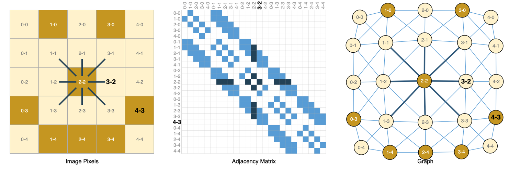
An image is a graph where every pixel is joined to its neighbors.
A convolution is a graph operation on a very regular graph. Every pixel has the same number of neighbors in the same relative positions, which is exactly why a fixed square kernel works. Take that regularity away and you need something that can handle a different number of neighbors per node, which is the whole subject.
A graph as data
A graph is nodes, edges, and features on both.
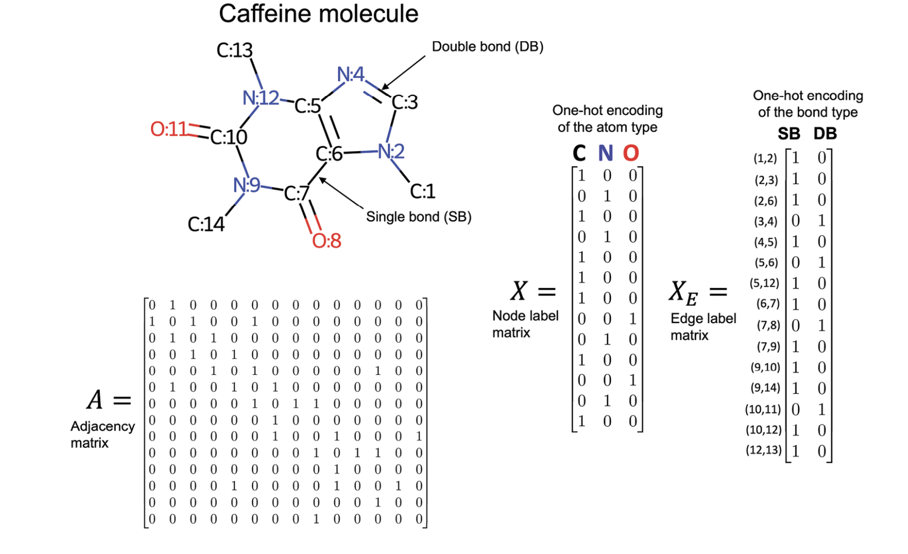
Caffeine as an example: the nodes are atoms with a one-hot type, the edges are bonds with a type of their own, and the adjacency matrix records who is attached to whom. Predicting toxicity from the atom counts alone cannot work, because the arrangement is the chemistry.
Why not just flatten it
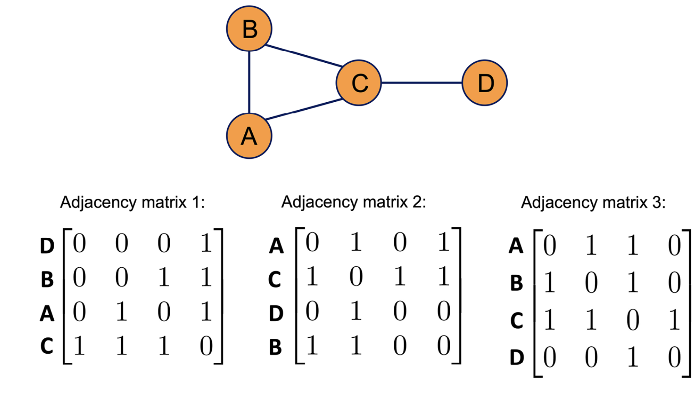
The same graph, numbered three ways, gives three different matrices.
Feed an adjacency matrix to an MLP and the model learns the numbering rather than the structure. Relabel the nodes and the prediction changes, which is nonsense because nothing about the graph changed. Whatever the layer does, it has to give the same answer under any ordering, and that constraint is what produces message passing.
A small example
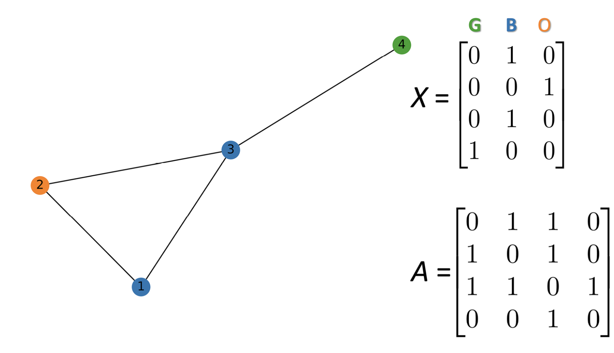
Four nodes, three colours. X holds the features, A holds the edges.
Keep this graph in mind for the next three slides. Node 4 hangs off the end with one neighbor, and nodes 1, 2 and 3 form a triangle. That asymmetry is what makes the worked example readable.
One graph convolution
Each node’s new vector is its own, plus a sum over its neighbors.
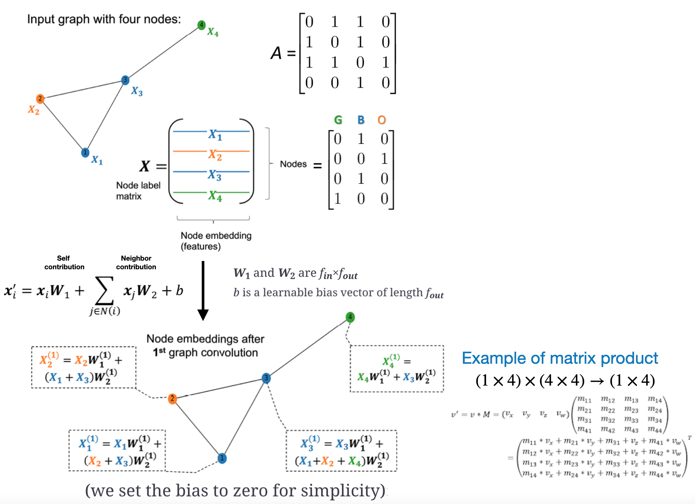
A sum does not care about order, which is exactly the property two slides ago demanded. Two weight matrices: one for yourself, one shared by every neighbor. That is the whole layer. Look at node 4: it only has node 3 as a neighbor, so its update is the shortest of the four.
The same thing, as message passing
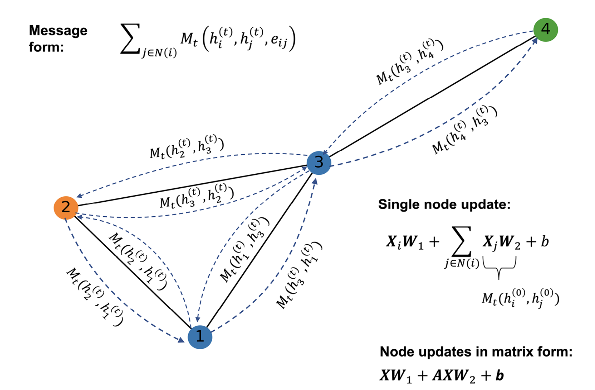
Every edge carries a message in both directions, each node adds up what arrives, and that sum updates it. Written this way the message can be anything differentiable, including something that uses the edge features, and the convolution from the last slide is the special case where the message is just the neighbor’s vector times a shared matrix. The matrix form at the bottom right is the one you would implement.
Stacking reaches further
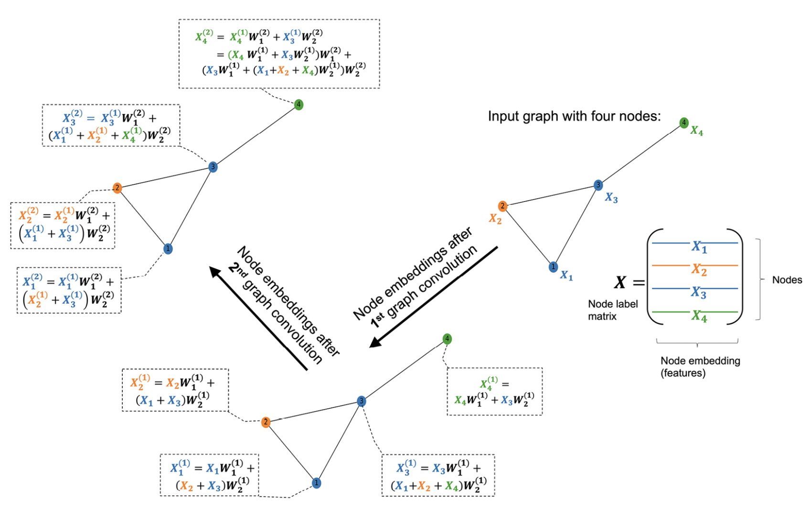
One layer sees neighbors. Two layers see neighbors of neighbors.
The same receptive-field argument as a CNN. Most graph networks stop at two or three layers, because past that every node’s neighborhood has grown to include most of the graph and all the embeddings start to look alike. That failure has a name, over-smoothing, and it is the reason graph networks are shallow.
Pooling, to say something about the whole graph
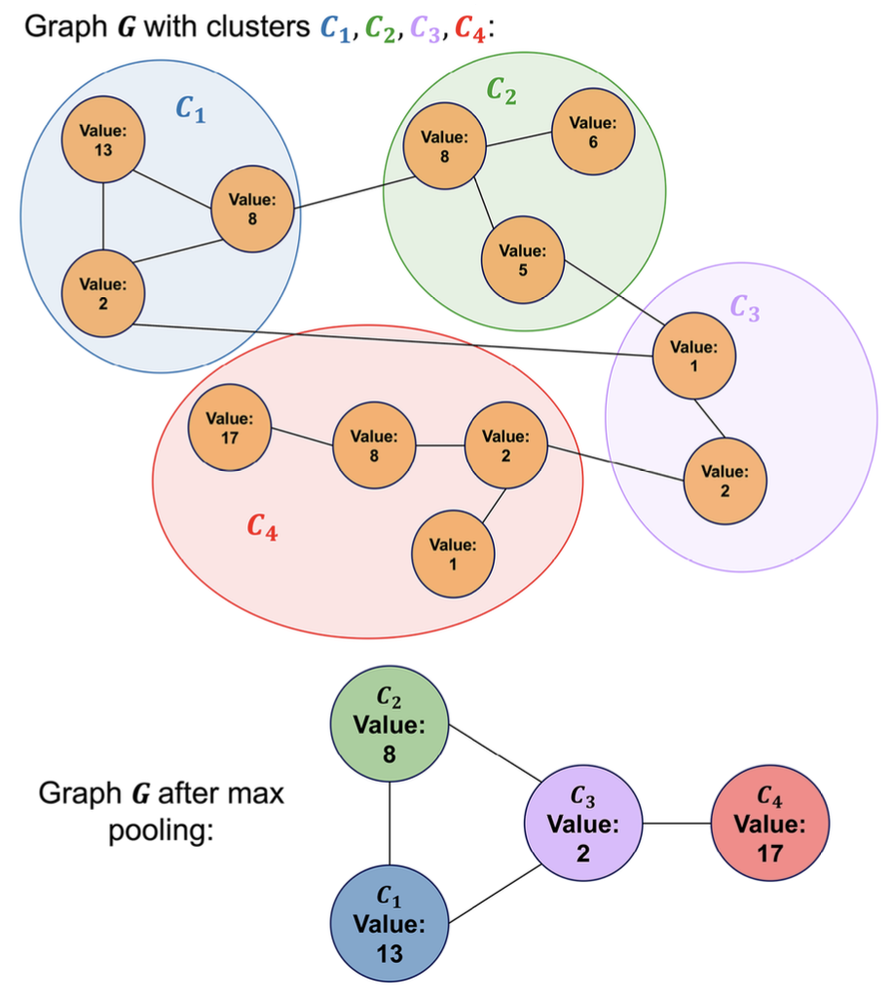
Node-level work stops after the convolutions. To predict a property of the whole graph you have to reduce a variable number of node vectors to one, and the simplest answer is to take the mean or the max over all of them. The picture shows the fancier version, clustering first and pooling within clusters, which keeps some structure on the way down.
Three kinds of prediction
The level decides how you split your data, and that is where the real mistakes happen. For node-level work there is one graph, and your train and test nodes are neighbors, so a message-passing layer reads the test nodes while training. For edge-level work you have to hide the edges you are predicting. Getting this wrong inflates your score quietly and nothing in the code looks broken.
Wrap-up
CLIP puts images and captions in one space. Search and filtering, not just labelsEarly, late, cross-attention. Three ways to combine, and they decide what a model can doDocuments are the multimodal job you will probably be handedA specialist beats a general VLM on a narrow task you repeat
A new layer in a trained network should start as a no-op
A graph is worth it when the neighbors change the answer
A graph convolution is a sum over neighbors, which is why order does not matter
Split graph data carefully. That is where the leakage is
That is the course. Two weeks from today you present. Everything from Week 5 onward is fair game for the project, and the best projects this term have been the ones that picked a small real problem rather than a large famous dataset.
Supplemental content
Optional. Prof. Hickman’s centralized lecture content :
Also optional: Radford et al., CLIP (2021); Huang et al., LayoutLMv3 (2022); Sanchez-Lengeling et al., A Gentle Introduction to Graph Neural Networks (Distill, 2021).
Lab 12 and the project
Lab 12 is CLIP and a small graph network. You run zero-shot classification and retrieval over a set of images, then train a node classifier on a citation graph and compare it against the same model with the edges removed. Due Wednesday, December 2, the day before presentations.
Presentations are Thursday, December 3. Five minutes per group. The final repository is due December 1.